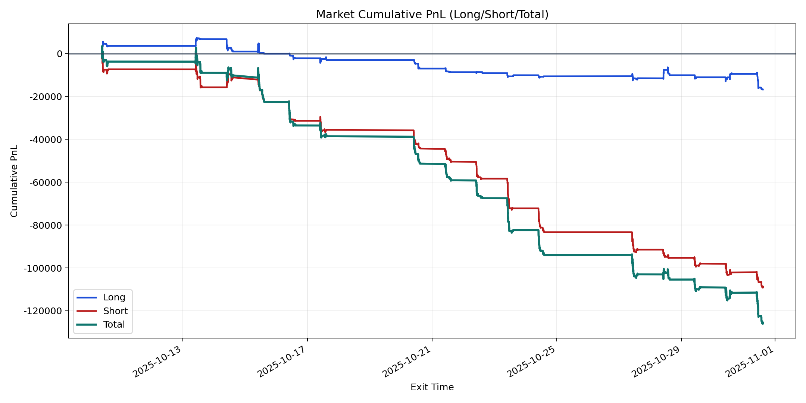
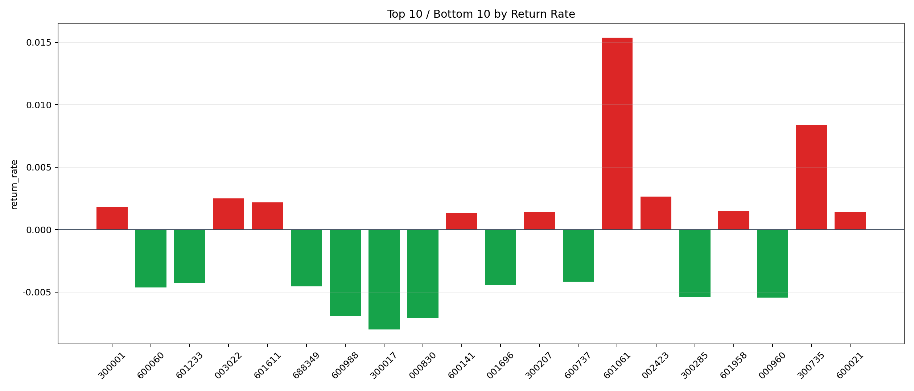

| repo_root | /home/haoranyou/data/output/dynamic_AUM_TAKER_index500 |
|---|---|
| period_months | 1 |
| period_label | 2025-10-10_to_2025-10-31 |
| start_time | 2025-10-10 09:45:32 |
| end_time | 2025-10-31 14:37:22 |
| n_trades | 7864 |
| n_symbols | 106 |
| total_pnl | -125409.28105000038 |
| long_total_pnl | -16791.205099999097 |
| short_total_pnl | -108618.07595000128 |
| total_entry_notional | 142055034.0 |
| long_entry_notional | 40493820.0 |
| short_entry_notional | 101561213.99999999 |
| total_return_rate | -0.0008828218016547051 |
| long_return_rate | -0.0004146609309766057 |
| short_return_rate | -0.001069483828245705 |
| top_symbols_by_return | ["601061", "300735", "002423", "003022", "601611", "300001", "601958", "600021", "300207", "600141"] |
| bottom_symbols_by_return | ["300017", "000830", "600988", "000960", "300285", "600060", "688349", "001696", "601233", "600737"] |

